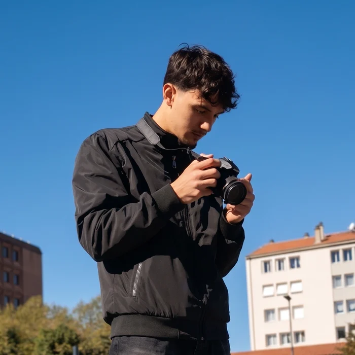

KenanZeybek
Étudiant en 2e année de BUT MMI au Puy-en-Velay. Je crée des vidéos de A à Z, du cadrage au montage, et des identités visuelles qui ont du caractère.

À la une
Mes trois dernières productions audiovisuelles, tournées et montées en équipe.
Trois univers
L'image animée d'abord, mais aussi le print et le web.
Mes projets
Projets réalisés en BUT MMI, entre 2025 et 2026. Clique sur un projet pour voir le détail et mon rôle.
Qui suis-je ?
Kenan, 2e année de BUT MMI
Je suis étudiant en BUT Métiers du Multimédia et de l'Internet à l'IUT du Puy-en-Velay (Université Clermont Auvergne). La création numérique est devenue une vraie passion, et le BUT MMI m'a permis d'en explorer toutes les facettes.
Avant même la formation, j'ai monté des vidéos pour des streamers et des YouTubeurs. C'est là que j'ai compris à quel point le montage fait la différence entre un contenu qu'on oublie et un contenu qu'on regarde jusqu'au bout.
Aujourd'hui, je tourne, je monte, je dessine des logos et je code des sites. Je continue à me former sur de nouveaux outils comme After Effects ou Blender, et je me lance volontiers dans des projets qui me poussent à progresser.
Je cherche un stage de 10 semaines à partir de mi-avril 2027 (début flexible, fin avant juillet), idéalement en audiovisuel ou en création numérique.